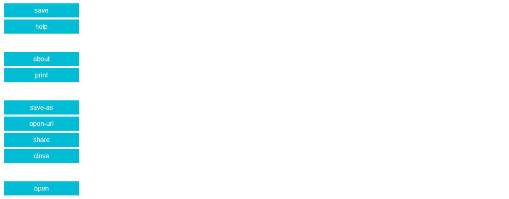
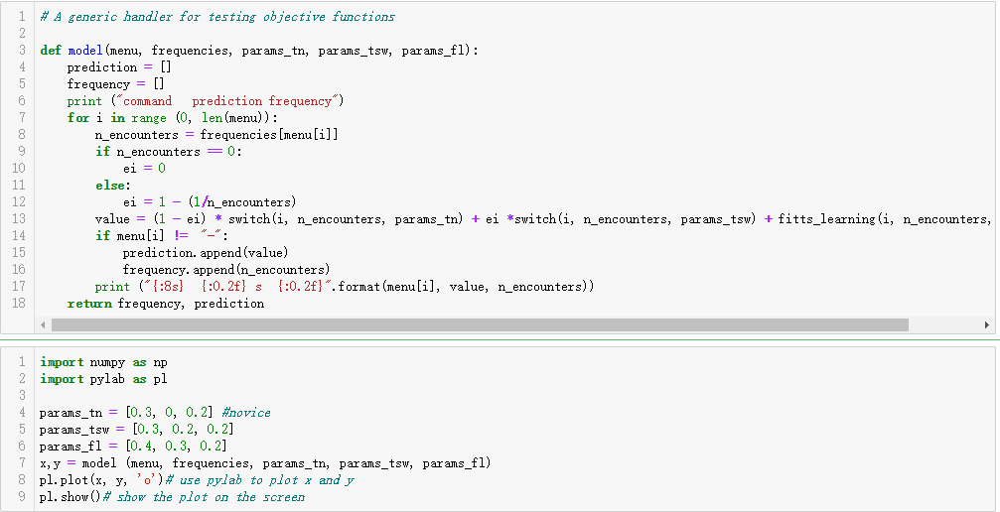
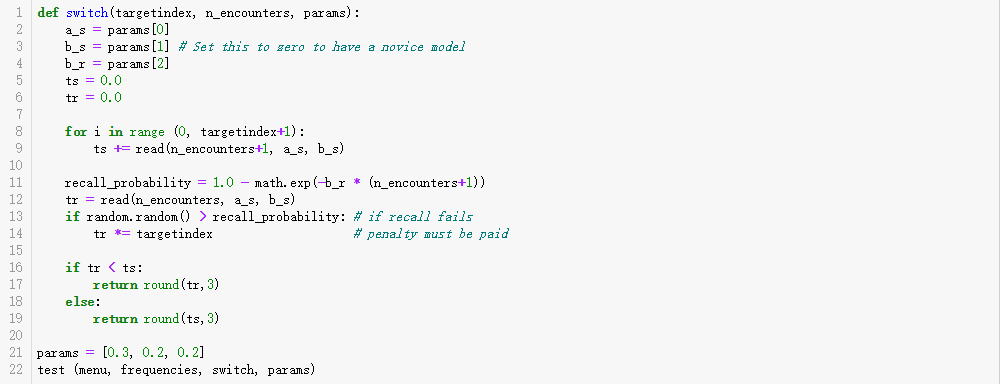
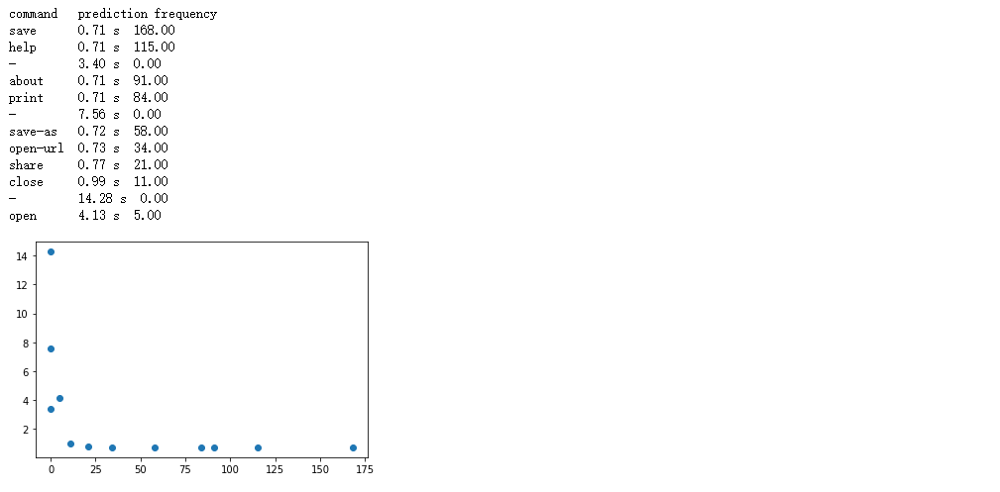
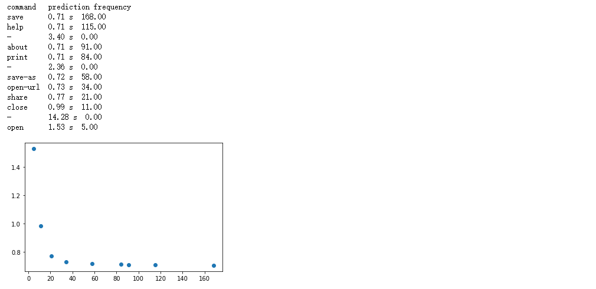
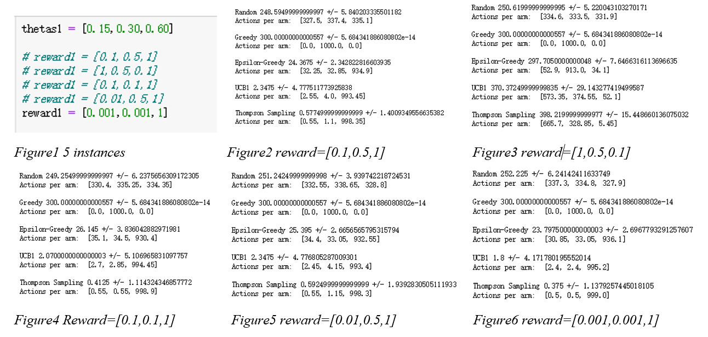
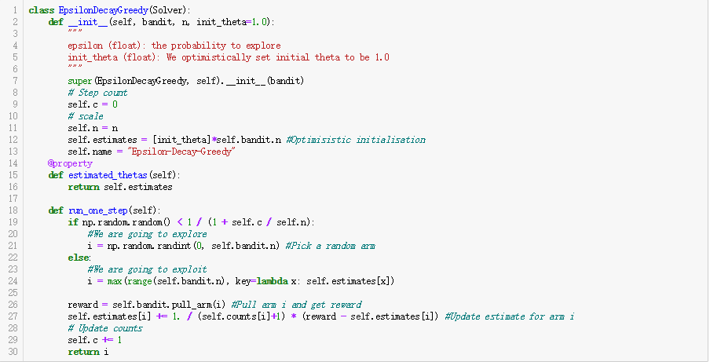
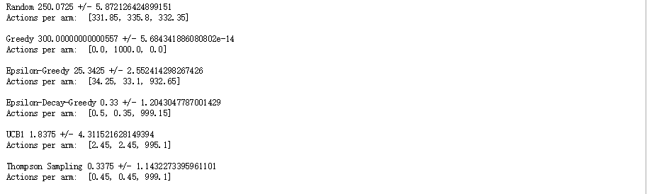

Computational UI Design (Course Project)
Computational interaction Machine Learning Python
I took the course Computational User Interface Design in Aalto University (Finland, 2019), and got to know several interesting topics addressing the use of algorithms and mathematical models to explain and enhance human-computer interaction. I learned skills to formulate design and interaction problems and derive solutions by analysis, simulation, and optimization with Python. Here are 2 main tasks I did during the course:
Contents
Human Performance Modelling: Novice-to-expert Transition
Multi-Armed Bandits Problem and the ε-Greedy Solver
Conclusion
Human Performance Modelling: Novice-to-expert Transition
Goal
The goal of this task is to model the transition of users from a novice user to a skilled user while clicking the items in a linear menu.
Modelling the menu selection time
The selection time is consisted of two parts: search time and pointing time. The pointing time can be calculated by using the Fitts’ Law model, thus the model predicting the selection time Ti for each item i can be calculated by:Ti = T(search) + T(pointing) = T(search) + T(Fitts’ Law)Modelling users’ transition from novice to expert
In order to model the transition process from novice to expert, I decide to use the frequency ti to model the user’s expertise ei with menu item i:ei = 1 – 1/tiHere, ei is the user’s expertise with that item, from 0 (complete novice) to 1 (complete expert). Then I use ei to model the transition process:
Ti = (1-ei) * T(search-novice) + ei * T(search-expert) + T(pointing)
Modelling users’ strategy-change
The strategy-change I used is about shifting from a scanning-based search to a recall-based search, since when users gain expertise, they do not need to scan all the items of the menu that they have tried for several times, instead, they can search for specific items based on their memory. The model will switch to recall as soon as it becomes more efficient than using scanning.
Plotting the change
Plotting the change of expected selection time as a function of experience:

I notice that in the results, the item “-” in the menu is not very useful (with zero frequency and high selection time) and thus I remove them from the plot. The plot seems to be clearer this time. As shown in the plot, the overall trend shows that items with lower frequency have higher expected search time, which means when users become more expertise, the expected selection time of the items becomes shorter, and the selection time tends to be logarithmic with users’ transition from novice to expert.

Multi-Armed Bandits Problem and the ε-Greedy Solver
Multi-Armed Bandits
The multi-armed bandits are always used to address the tradeoff between exploitation and exploration, aiming to maximite cumulative reward. There are many applications, for example, testing design variations by dynamically allocate users to variations so that more users see optimal designs and inferior designs ruled out faster.Update the Bandit to address varying rewards
There are several solver strategies for a bandit problem to choose the arm, for example, Random, Greedy, ϵ-Greedy, UCB1 and Thompson Sampling. In this case, I was asked to update the Bandit problem such that every arm returns a different reward and create different instances to test the solvers.

As shown in the results, the Random and the Greedy solvers are not influenced by setting different reward of each item, and that probably because they do not learn from previous history and not change the strategy to select the arm each time (Figure 2&3). The UCB1 and Thompson Sampling algorithm performs better when the weight of the reward of item with higher reward probability becomes bigger (Figure 6&4&5&2).Improve the ε-Greedy Solver
The weakness of Epsilon-Greedy strategies is that they include random noise continually no matter how many examples they have tried. Based on this, it would be better for Epsilon-Greedy strategies to settle on an optimal solution and continue to exploit it. In this case, the Epsilon-Decay-Greedy strategies introduce a new epsilon which reduces the probability of exploration with each step. The definition is:ε(n) = 1 / (1 + n*β)here n is the steps counted for the arm, and β<1 is set as a scaling factor to reduce the scaling rate so that there are enough opportunity for the algorithm to explore, here I use β= 1/(number of arms); +1 is used to prevent infinities exploring:

As shown in the result below, the Epsilon-Decay-Greedy strategy perform better than the original Epsilon-Greedy strategy since it sticks to the optimal action once it is found.

Conclusion
The workload for this course is really heavy, but I did learn interesting things from it. Computational UI design is a new approach for design, which offers proofs for design solutions and increases the efficiency, enjoyability and robustness of interaction. It is not aiming to replace the designers but to free up designers to be more creative.